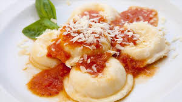

En un bowl poner harina, sal, aceite y huevo. Tomar la masa con el agua caliente. Poco a poco y de ser necesario poner solo un poco más de harina. Tapar y dejar descansar 20 minutos
Mientras preparamos el relleno. Picar el jamón, agregar la ricota, el queso rallado y condimentar
Estirar la masa por partes sobre la mesa enharinada. No debe quedar ni muy fina ni demasiado gruesa. Colocar sobre la sorrentinera espolvoreada con harina. Ir colocando el relleno y un dadito de muzzarella. Tapar con la otra parte de masa.
Marcar suavemente con el palo de amasar sin arrastrar el relleno. Dar vuelta sobre la mesada espolvoreada con un poco de harina y vamos con la siguiente tanda así hasta terminar la masa.
Cocinar en abundante agua (con sal) hirviendo, pero no a borbotones para que no revienten. Una vez que suben esperar unos minutitos. Luego apagar y dejar en la olla tapada unos 3 o 4 minutos más. Acompañar con tu salsa favorita.
